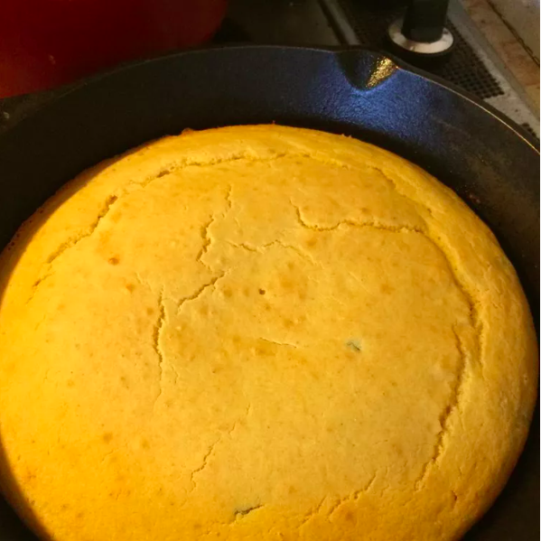

Cornbread

Description
Southern style skillet cornbread.
Ingredients
- 1 1/4 cups milk
- 1 cup cornmeal
- 1 cup all-purpose flour
- 4 teaspoons baking powder
- 3/4 teaspoon salt
- 2 eggs
- 1/4 cup melted, unsalted butter
- 1 tablespoon vegetable oil
Steps
- Place a 9-inch cast iron skillet into the oven and preheat to 425 degrees F.
- Mix milk and cornmeal together in small bowl. Let soak for 10 minutes.
- Sift flour, baking powder, and salt together into a mixing bowl. Add cornmeal mixture, eggs, and butter; beat until a smooth batter forms, about 1 minute.
- Remove the hot skillet from the oven. Add vegetable oil to the skillet and swish to coat. Pour out any excess oil, then pour batter into the skillet.
- Bake in the preheated oven until a toothpick inserted into the center comes out clean, 18 to 23 minutes. Cut into wedges to serve.